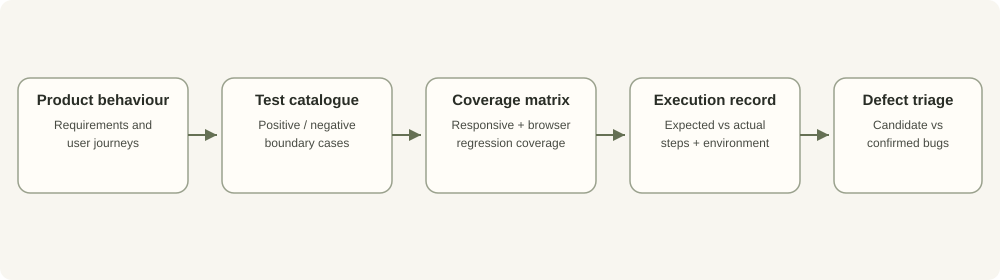

Project case study · Software development · Quality engineering
QA testing and test design
A manual QA assessment workflow designed to turn product behaviour into reviewable test cases and reproducible defect evidence.
Why build a traceable test process?
A list of test titles does not demonstrate product coverage. Useful QA work connects a requirement or user journey to its scenarios, states the expected outcome, records what actually happened, and provides enough evidence for another person to reproduce a defect.
Test architecture and workflow

What is in scope
- Feature-based test cases derived from documented behaviour and user journeys.
- Boundary cases, invalid input, empty states, and responsive behaviour where applicable.
- A cross-browser and responsive test matrix.
- Candidate bug reports with steps to reproduce, expected/actual behaviour, and supporting evidence when captured.
- Change traceability to connect product updates to regression candidates.
How results should be recorded
| Field | Purpose |
|---|---|
| Scenario / requirement | Shows why the test exists and what feature it covers. |
| Preconditions and steps | Lets another tester reproduce the state and action sequence. |
| Expected vs actual | Separates product requirements from observed behaviour. |
| Environment and evidence | Records browser/device/version and links a real screenshot or recording. |
| Defect status | Keeps candidate observations separate from confirmed, reproducible defects. |
Tests and evidence status
The repository describes the test approach, feature-based test cases, candidate bug reports, a cross-browser/responsive matrix, evidence folders, and optional Playwright planning. Evidence folders remain placeholders until genuine screenshots or recordings are added. No unexecuted test is marked passed on this page.
The project scope is manual QA assessment and test planning; the repository excludes security, penetration, and load testing. Selenium browser automation described in this portfolio belongs to DarkSense AI, not this case study.
Contribution, measurements, and next steps
The detailed contribution log will identify personally authored scenarios, test-design choices, reproduced defects, and any automation work separately. Pass/fail totals, confirmed defect counts, screenshots, and a short demo will be added after execution evidence exists. No test-coverage percentage or defect-detection metric is asserted at this stage.